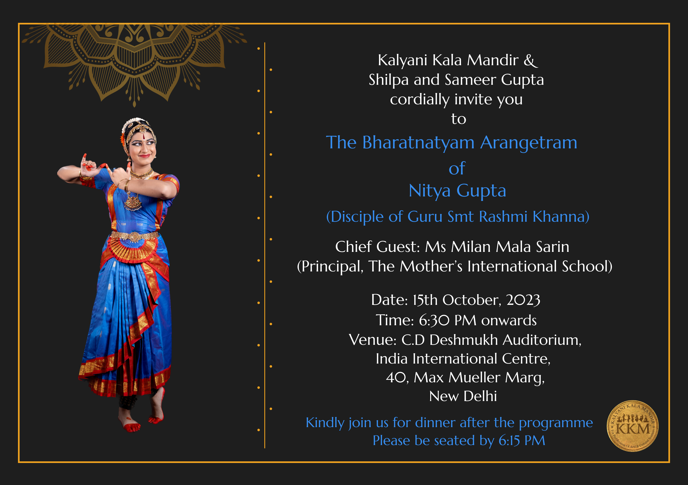
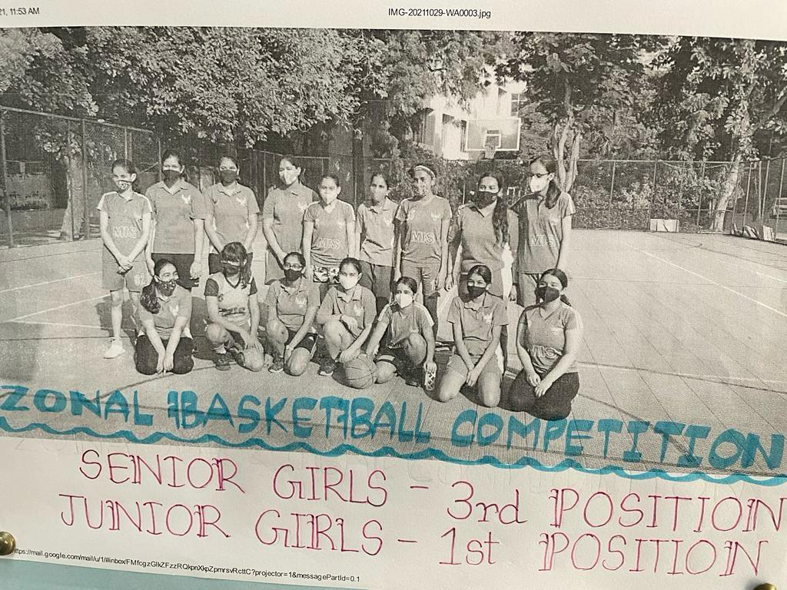
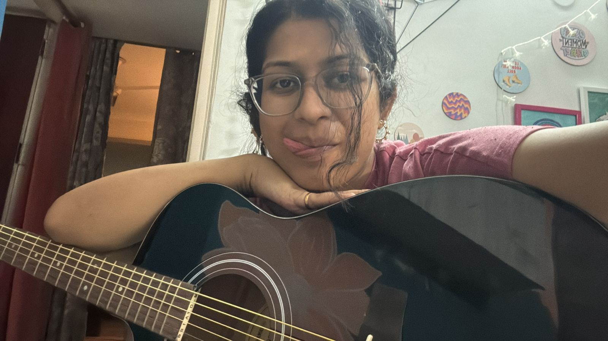

An invite, from my arangetram which was one of the best days of my life. Not only was I performing my favourite dance pieces and feeling the music, but the realisation that I had so many people supporting me and my family, really made my day. So, as the music took over and my body danced to the rhythm, I experienced a high I had never before felt.

This is from the time we won the zonal championship in 9th grade.

the only picture i have with my guitar, or any instrument really.